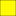

<!doctype html>
<html lang="en">
    <head>
        <meta charset="utf-8">
        <meta http-equiv="X-UA-Compatible" content="IE=edge">
        <meta name="viewport" content="initial-scale=1,user-scalable=no,maximum-scale=1,width=device-width">
        <meta name="mobile-web-app-capable" content="yes">
        <meta name="apple-mobile-web-app-capable" content="yes">
        <link rel="stylesheet" href="css/leaflet.css">
        <link rel="stylesheet" href="css/qgis2web.css"><link rel="stylesheet" href="css/fontawesome-all.min.css">
        <link rel="stylesheet" href="css/leaflet-search.css">
        <link rel="stylesheet" href="css/leaflet-measure.css">
        <style>
        html, body, #map {
            width: 100%;
            height: 100%;
            padding: 0;
            margin: 0;
        }
        </style>
        <title></title>
    </head>
    <body>
        <div id="map">
        </div>
        <script src="js/qgis2web_expressions.js"></script>
        <script src="js/leaflet.js"></script>
        <script src="js/leaflet-svg-shape-markers.min.js"></script>
        <script src="js/leaflet.rotatedMarker.js"></script>
        <script src="js/leaflet.pattern.js"></script>
        <script src="js/leaflet-hash.js"></script>
        <script src="js/Autolinker.min.js"></script>
        <script src="js/rbush.min.js"></script>
        <script src="js/labelgun.min.js"></script>
        <script src="js/labels.js"></script>
        <script src="js/leaflet-measure.js"></script>
        <script src="js/leaflet-search.js"></script>
        <script src="data/colesCorbeilEssonnes_3.js"></script>
        <script src="data/espacesdepause_4.js"></script>
        <script src="data/superficie_patrimoine_CorbeilEssonnes_5.js"></script>
        <script src="data/patrimoinesCorbeilEssonnes_6.js"></script>
        <script>
        var map = L.map('map', {
            zoomControl:true, maxZoom:28, minZoom:1
        })
        var hash = new L.Hash(map);
        map.attributionControl.setPrefix('<a href="https://github.com/tomchadwin/qgis2web" target="_blank">qgis2web</a> &middot; <a href="https://leafletjs.com" title="A JS library for interactive maps">Leaflet</a> &middot; <a href="https://qgis.org">QGIS</a>');
        var autolinker = new Autolinker({truncate: {length: 30, location: 'smart'}});
        var measureControl = new L.Control.Measure({
            position: 'topleft',
            primaryLengthUnit: 'meters',
            secondaryLengthUnit: 'kilometers',
            primaryAreaUnit: 'sqmeters',
            secondaryAreaUnit: 'hectares'
        });
        measureControl.addTo(map);
        document.getElementsByClassName('leaflet-control-measure-toggle')[0]
        .innerHTML = '';
        document.getElementsByClassName('leaflet-control-measure-toggle')[0]
        .className += ' fas fa-ruler';
        var bounds_group = new L.featureGroup([]);
        function setBounds() {
            if (bounds_group.getLayers().length) {
                map.fitBounds(bounds_group.getBounds());
            }
        }
        map.createPane('pane_GoogleSatellite_0');
        map.getPane('pane_GoogleSatellite_0').style.zIndex = 400;
        var layer_GoogleSatellite_0 = L.tileLayer('https://mt1.google.com/vt/lyrs=s&x={x}&y={y}&z={z}', {
            pane: 'pane_GoogleSatellite_0',
            opacity: 1.0,
            attribution: '',
            minZoom: 1,
            maxZoom: 28,
            minNativeZoom: 0,
            maxNativeZoom: 19
        });
        layer_GoogleSatellite_0;
        map.createPane('pane_GoogleMaps_1');
        map.getPane('pane_GoogleMaps_1').style.zIndex = 401;
        var layer_GoogleMaps_1 = L.tileLayer('https://mt1.google.com/vt/lyrs=m&x={x}&y={y}&z={z}', {
            pane: 'pane_GoogleMaps_1',
            opacity: 1.0,
            attribution: '',
            minZoom: 1,
            maxZoom: 28,
            minNativeZoom: 0,
            maxNativeZoom: 19
        });
        layer_GoogleMaps_1;
        map.createPane('pane_PlandevilleNov2017_2');
        map.getPane('pane_PlandevilleNov2017_2').style.zIndex = 402;
        var img_PlandevilleNov2017_2 = 'data/PlandevilleNov2017_2.png';
        var img_bounds_PlandevilleNov2017_2 = [[48.56774548650505,2.4324996176350755],[48.63006541966572,2.5014151556486715]];
        var layer_PlandevilleNov2017_2 = new L.imageOverlay(img_PlandevilleNov2017_2,
                                              img_bounds_PlandevilleNov2017_2,
                                              {pane: 'pane_PlandevilleNov2017_2'});
        bounds_group.addLayer(layer_PlandevilleNov2017_2);
        map.addLayer(layer_PlandevilleNov2017_2);
        function pop_colesCorbeilEssonnes_3(feature, layer) {
            var popupContent = '<table>\
                    <tr>\
                        <th scope="row">nom</th>\
                        <td>' + (feature.properties['nom'] !== null ? autolinker.link(feature.properties['nom'].toLocaleString()) : '') + '</td>\
                    </tr>\
                </table>';
            layer.bindPopup(popupContent, {maxHeight: 400});
        }

        function style_colesCorbeilEssonnes_3_0() {
            return {
                pane: 'pane_colesCorbeilEssonnes_3',
                shape: 'diamond',
                radius: 12.8,
                opacity: 1,
                color: 'rgba(0,0,0,1.0)',
                dashArray: '',
                lineCap: 'butt',
                lineJoin: 'miter',
                weight: 2.0,
                fill: true,
                fillOpacity: 1,
                fillColor: 'rgba(255,251,1,1.0)',
                interactive: true,
            }
        }
        map.createPane('pane_colesCorbeilEssonnes_3');
        map.getPane('pane_colesCorbeilEssonnes_3').style.zIndex = 403;
        map.getPane('pane_colesCorbeilEssonnes_3').style['mix-blend-mode'] = 'normal';
        var layer_colesCorbeilEssonnes_3 = new L.geoJson(json_colesCorbeilEssonnes_3, {
            attribution: '',
            interactive: true,
            dataVar: 'json_colesCorbeilEssonnes_3',
            layerName: 'layer_colesCorbeilEssonnes_3',
            pane: 'pane_colesCorbeilEssonnes_3',
            onEachFeature: pop_colesCorbeilEssonnes_3,
            pointToLayer: function (feature, latlng) {
                var context = {
                    feature: feature,
                    variables: {}
                };
                return L.shapeMarker(latlng, style_colesCorbeilEssonnes_3_0(feature));
            },
        });
        bounds_group.addLayer(layer_colesCorbeilEssonnes_3);
        map.addLayer(layer_colesCorbeilEssonnes_3);
        function pop_espacesdepause_4(feature, layer) {
            var popupContent = '<table>\
                    <tr>\
                        <th scope="row">nom</th>\
                        <td>' + (feature.properties['nom'] !== null ? autolinker.link(feature.properties['nom'].toLocaleString()) : '') + '</td>\
                    </tr>\
                </table>';
            layer.bindPopup(popupContent, {maxHeight: 400});
        }

        function style_espacesdepause_4_0() {
            return {
                pane: 'pane_espacesdepause_4',
                opacity: 1,
                color: 'rgba(0,0,0,1.0)',
                dashArray: '',
                lineCap: 'butt',
                lineJoin: 'miter',
                weight: 4.0, 
                fill: true,
                fillOpacity: 1,
                fillColor: 'rgba(77,175,74,1.0)',
                interactive: true,
            }
        }
        map.createPane('pane_espacesdepause_4');
        map.getPane('pane_espacesdepause_4').style.zIndex = 404;
        map.getPane('pane_espacesdepause_4').style['mix-blend-mode'] = 'normal';
        var layer_espacesdepause_4 = new L.geoJson(json_espacesdepause_4, {
            attribution: '',
            interactive: true,
            dataVar: 'json_espacesdepause_4',
            layerName: 'layer_espacesdepause_4',
            pane: 'pane_espacesdepause_4',
            onEachFeature: pop_espacesdepause_4,
            style: style_espacesdepause_4_0,
        });
        bounds_group.addLayer(layer_espacesdepause_4);
        map.addLayer(layer_espacesdepause_4);
        function pop_superficie_patrimoine_CorbeilEssonnes_5(feature, layer) {
            var popupContent = '<table>\
                    <tr>\
                        <th scope="row">id</th>\
                        <td>' + (feature.properties['id'] !== null ? autolinker.link(feature.properties['id'].toLocaleString()) : '') + '</td>\
                    </tr>\
                    <tr>\
                        <th scope="row">nom</th>\
                        <td>' + (feature.properties['nom'] !== null ? autolinker.link(feature.properties['nom'].toLocaleString()) : '') + '</td>\
                    </tr>\
                </table>';
            layer.bindPopup(popupContent, {maxHeight: 400});
        }

        function style_superficie_patrimoine_CorbeilEssonnes_5_0() {
            return {
                pane: 'pane_superficie_patrimoine_CorbeilEssonnes_5',
                opacity: 1,
                color: 'rgba(35,35,35,1.0)',
                dashArray: '',
                lineCap: 'butt',
                lineJoin: 'miter',
                weight: 1.0, 
                fill: true,
                fillOpacity: 1,
                fillColor: 'rgba(0,254,250,1.0)',
                interactive: true,
            }
        }
        map.createPane('pane_superficie_patrimoine_CorbeilEssonnes_5');
        map.getPane('pane_superficie_patrimoine_CorbeilEssonnes_5').style.zIndex = 405;
        map.getPane('pane_superficie_patrimoine_CorbeilEssonnes_5').style['mix-blend-mode'] = 'normal';
        var layer_superficie_patrimoine_CorbeilEssonnes_5 = new L.geoJson(json_superficie_patrimoine_CorbeilEssonnes_5, {
            attribution: '',
            interactive: true,
            dataVar: 'json_superficie_patrimoine_CorbeilEssonnes_5',
            layerName: 'layer_superficie_patrimoine_CorbeilEssonnes_5',
            pane: 'pane_superficie_patrimoine_CorbeilEssonnes_5',
            onEachFeature: pop_superficie_patrimoine_CorbeilEssonnes_5,
            style: style_superficie_patrimoine_CorbeilEssonnes_5_0,
        });
        bounds_group.addLayer(layer_superficie_patrimoine_CorbeilEssonnes_5);
        function pop_patrimoinesCorbeilEssonnes_6(feature, layer) {
            var popupContent = '<table>\
                    <tr>\
                        <td colspan="2">' + (feature.properties['id'] !== null ? autolinker.link(feature.properties['id'].toLocaleString()) : '') + '</td>\
                    </tr>\
                    <tr>\
                        <th scope="row">nom</th>\
                        <td>' + (feature.properties['nom'] !== null ? autolinker.link(feature.properties['nom'].toLocaleString()) : '') + '</td>\
                    </tr>\
                    <tr>\
                        <th scope="row">époque</th>\
                        <td>' + (feature.properties['époque'] !== null ? autolinker.link(feature.properties['époque'].toLocaleString()) : '') + '</td>\
                    </tr>\
                    <tr>\
                        <th scope="row">visible</th>\
                        <td>' + (feature.properties['visible'] !== null ? autolinker.link(feature.properties['visible'].toLocaleString()) : '') + '</td>\
                    </tr>\
                    <tr>\
                        <td colspan="2">' + (feature.properties['commentair'] !== null ? autolinker.link(feature.properties['commentair'].toLocaleString()) : '') + '</td>\
                    </tr>\
                    <tr>\
                        <th scope="row">quartier</th>\
                        <td>' + (feature.properties['quartier'] !== null ? autolinker.link(feature.properties['quartier'].toLocaleString()) : '') + '</td>\
                    </tr>\
                </table>';
            layer.bindPopup(popupContent, {maxHeight: 400});
        }

        function style_patrimoinesCorbeilEssonnes_6_0() {
            return {
                pane: 'pane_patrimoinesCorbeilEssonnes_6',
                radius: 7.2,
                opacity: 1,
                color: 'rgba(255,255,255,1.0)',
                dashArray: '',
                lineCap: 'butt',
                lineJoin: 'miter',
                weight: 2.0,
                fill: true,
                fillOpacity: 1,
                fillColor: 'rgba(25,93,227,1.0)',
                interactive: true,
            }
        }
        map.createPane('pane_patrimoinesCorbeilEssonnes_6');
        map.getPane('pane_patrimoinesCorbeilEssonnes_6').style.zIndex = 406;
        map.getPane('pane_patrimoinesCorbeilEssonnes_6').style['mix-blend-mode'] = 'normal';
        var layer_patrimoinesCorbeilEssonnes_6 = new L.geoJson(json_patrimoinesCorbeilEssonnes_6, {
            attribution: '',
            interactive: true,
            dataVar: 'json_patrimoinesCorbeilEssonnes_6',
            layerName: 'layer_patrimoinesCorbeilEssonnes_6',
            pane: 'pane_patrimoinesCorbeilEssonnes_6',
            onEachFeature: pop_patrimoinesCorbeilEssonnes_6,
            pointToLayer: function (feature, latlng) {
                var context = {
                    feature: feature,
                    variables: {}
                };
                return L.circleMarker(latlng, style_patrimoinesCorbeilEssonnes_6_0(feature));
            },
        });
        bounds_group.addLayer(layer_patrimoinesCorbeilEssonnes_6);
        map.addLayer(layer_patrimoinesCorbeilEssonnes_6);
        var baseMaps = {};
        L.control.layers(baseMaps,{' patrimoines Corbeil-Essonnes': layer_patrimoinesCorbeilEssonnes_6,' superficie_patrimoine_Corbeil-Essonnes': layer_superficie_patrimoine_CorbeilEssonnes_5,' espaces de pause': layer_espacesdepause_4,' écoles Corbeil-Essonnes': layer_colesCorbeilEssonnes_3,"Plan de ville Nov.2017": layer_PlandevilleNov2017_2,"Google Maps": layer_GoogleMaps_1,"Google Satellite": layer_GoogleSatellite_0,},{collapsed:false}).addTo(map);
        setBounds();
        map.addControl(new L.Control.Search({
            layer: layer_patrimoinesCorbeilEssonnes_6,
            initial: false,
            hideMarkerOnCollapse: true,
            propertyName: 'nom'}));
        document.getElementsByClassName('search-button')[0].className +=
         ' fa fa-binoculars';
        L.ImageOverlay.include({
            getBounds: function () {
                return this._bounds;
            }
        });
        </script>
    </body>
</html>
